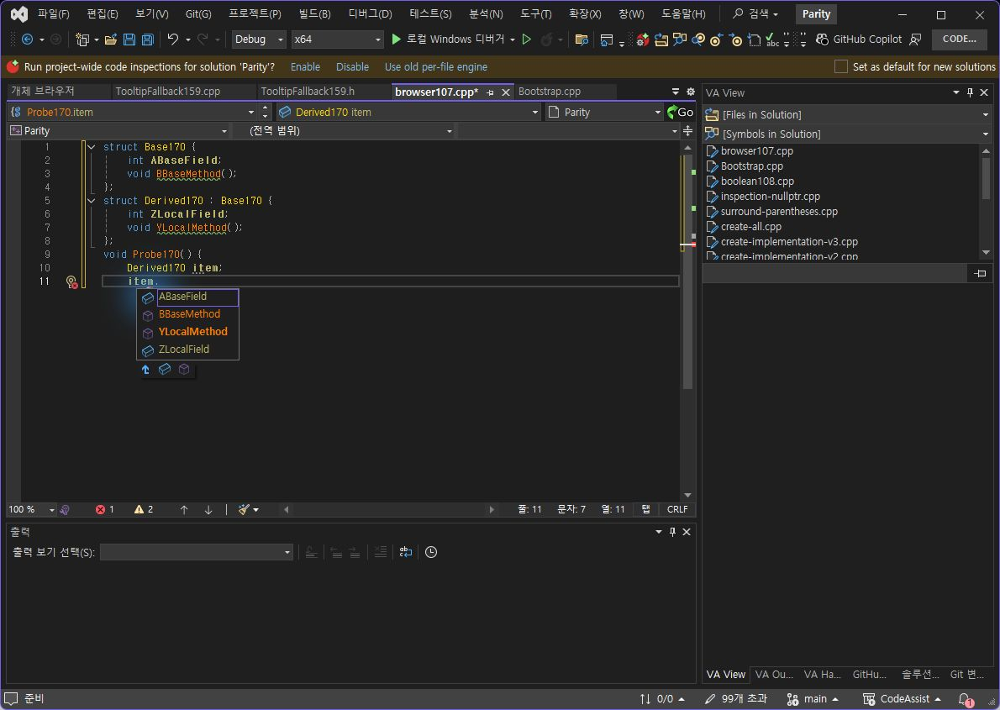
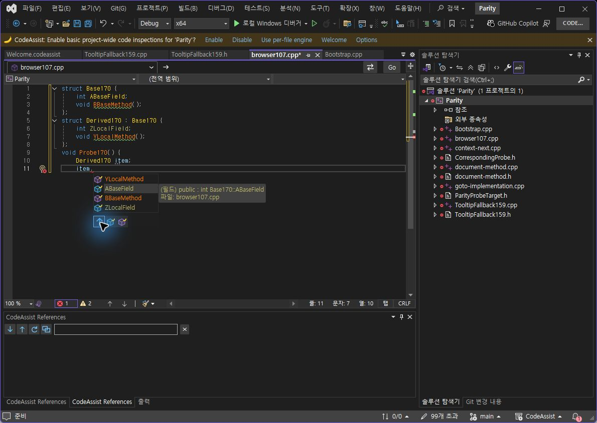

Tracefolio REPORTS & ISSUES
Tracefolio REPORTS & ISSUES다중선택·상속 정렬 — 0.0.171
기존 기록 이전원문에 기록된 작업 내용과 당시 검증 범위를 정리한 보관 기록입니다.
CA171 다중선택·상속 정렬
다중선택·상속 정렬 — 0.0.171
상속 정렬 실제 대조 2/2개 상태(100%) 일치. 다중선택은 실제 버튼에서 사용하는 로직 자동검사 6/6개(100%) 통과. Ctrl/Shift를 누른 채 마우스를 클릭하는 물리 입력 대조는 도구가 지원하지 않아 미검증이며, 두 항목 모두 실제 대조 완료로 표시하지 않습니다.
수정과 실행 결과
CA 파서가 접근 지정자 없는 struct Derived : Base 상속을 인식하지 못해 부모 멤버가 빠지는 것을 실제 화면에서 확인했습니다. 접근 지정자를 선택 사항으로 수정했고 생략/public/protected/private 4개 회귀검사를 추가했습니다. private/protected 사례는 파서의 계층·심볼 보존 검사이며 접근 가능성의 완전한 C++ 컴파일러 인증은 아닙니다.
VA 버튼을 한 줄·여러 줄 선언에서 직접 실행한 결과 자체 함수만 앞에 오고 필드는 기존 순서를 유지했습니다. CA도 해당 순서를 따르도록 수정했습니다. 꺼짐: ABaseField, BBaseMethod, YLocalMethod, ZLocalField. 켜짐: YLocalMethod, ABaseField, BBaseMethod, ZLocalField. 아래 최종171 화면과 VA 화면의 이름·순서로 판정했으며 아이콘·픽셀 디자인 전체 일치율은 아닙니다.
VA 꺼짐

CA171 꺼짐

VA 켜짐

CA171 켜짐

다중선택
Ctrl 추가/제거, Shift 양방향 범위, 앵커 없는 Shift, 범위 밖 기존 선택 보존, 일반 선택·재클릭 해제를 공통 CompletionFilterSelection으로 분리해 실제 WPF 버튼에서 호출합니다. 자동검사 6개 통과. Computer Use API의 ClickInput에는 키보드 수식키나 key-down/up 기능이 없으므로 이 자동검사를 물리 입력 비교로 바꾸어 보고하지 않습니다.
검증 범위와 설치
자동검사458/458개(100%). VS2019·Modern SDK 빌드 성공, 검사 CA 프로필 설치 파일 6개와 패키지 해시 일치, 단축키 등록48개 검사. 실제 실행은 VS2022 검사 프로필입니다. 최종171에서 상속 멤버4개 표시 및 켜짐/꺼짐을 확인했습니다.
중간 재시작에서 이전170 확장 경로를 참조하는 FileNotFoundException이 발생했습니다. 해당 실패를 통과 처리하지 않았고 검사 전용 프로필의 ComponentModelCache를 백업·갱신하고 UpdateConfiguration 후 재시작하여 최종171 화면을 검증했습니다. VA·CA 원본 문서를 복구했고 검사 종료 직전 미저장 문서는 양쪽0개입니다. VA 저장 시 탭 변환이 발생하여 마지막에는 백업 파일로 바이트까지 복구했습니다.
기존 선정 옵션 누적10/12개(83.33%)는 별도 표본으로 유지합니다. 앞서 이번 두 항목이 기존10/12의 나머지라고 설명한 것은 부정확했으며, 그 수치에 이번 정렬 검사를 임의로 더하지 않습니다. 문서·도움말 부분 명세108/108개(100%), 전체 역분석 완료율과 제품 전체 동기화율은 미확인입니다. 남음: 다중선택 물리 대조, 기존 With Snippets/키 홀드 등 미검증 항목과 전체 범위 인증.
제안20분. 시작13:49:25 KST. 실제 종료·소요 시간은 summary.json에 기록했습니다. XERJ: SelectKinds 검색 사용, 관련 표시기 누락으로 rg와 현재 소스로 확인했습니다.
458개 자동검사 · 최종 설치 · 패키지 · 빌드 · 중간 로드 실패
원문과 편집 이력
- 원문 SHA-256:
e51245f69a087fb6daea9395b52c8f0187ea8373915c43380fade51f5424f323 - 표시 날짜는 원본 파일의 수정 시각입니다. 작업 완료 시각은 원문에 있는 값을 기준으로 확인합니다.